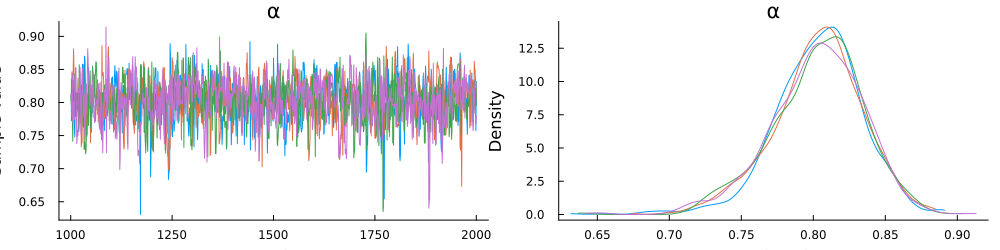

Parameter Estimation
In this brief tutorial, we will demonstrate how to perform Bayesian parameter estimation using Turing.jl. For simplicity, we will estimate the utility curvature parameter of an expected utility model from 50 independent identically distributed observations from a single choice set.
Load Packages
The first step is to load the required packages.
using Plots
using Random
using Turing
using UtilityModels
Random.seed!(6541)Choice Set
Next, we will create the choice set from two trinary gambles. The first gamble is less risky than the second gamble, as defined by lower variance.
gamble1 = Gamble(;
p = [.25, .25, .50],
v = [44, 40, 5]
)The second gamble is relatively more risky.
gamble2 = Gamble(;
p = [.25, .25, .50],
v = [98, 10, 5]
)In the code block below, we combine the gambles into a vector representing the available options. In addition, we create a model object and generate 50 simulated choices. The gambles and simulated choices are combined into a single data structure so it can be passed to logpdf via Turing and subsequently parsed.
gambles = [gamble1,gamble2]
eu_model = ExpectedUtility(; α = .80, θ = 1)
choices = rand(eu_model, gambles, 50)
data = (gambles,choices)Create Turing Model
Below, we create a turing model by prefixing a function with the @model macro. The function passes the data and defines two sampling statements: a prior distribution on the utlity curvature parameter, and a sampling statement for the data.
@model function model(data)
α ~ truncated(Normal(.8, 1), 0, Inf)
data ~ ExpectedUtility(; α, θ = 1)
endEstimate Parameters
Now that the Turing model has been defined, we can pass it, along with the data, to sample to perform Bayesian parameter estimation with an MCMC algorithm called the No-U-turn sampler. The function call below will sample 2,000 times from the posterior distribution (discarding the first 1,000 warmup samples), for 4 parallel chains.
chain = sample(model(data), NUTS(1000, .85), MCMCThreads(), 1000, 4)┌ Info: Found initial step size
└ ϵ = 0.0125
┌ Info: Found initial step size
└ ϵ = 0.025
┌ Info: Found initial step size
└ ϵ = 0.00625
┌ Info: Found initial step size
└ ϵ = 3.2
Chains MCMC chain (1000×13×4 Array{Float64, 3}):
Iterations = 1001:1:2000
Number of chains = 4
Samples per chain = 1000
Wall duration = 0.91 seconds
Compute duration = 3.03 seconds
parameters = α
internals = lp, n_steps, is_accept, acceptance_rate, log_density, hamiltonian_energy, hamiltonian_energy_error, max_hamiltonian_energy_error, tree_depth, numerical_error, step_size, nom_step_size
Summary Statistics
parameters mean std mcse ess_bulk ess_tail rhat ess_per_sec
Symbol Float64 Float64 Float64 Float64 Float64 Float64 Float64
α 0.8031 0.0317 0.0009 1299.4792 1501.7839 1.0008 428.8710
Quantiles
parameters 2.5% 25.0% 50.0% 75.0% 97.5%
Symbol Float64 Float64 Float64 Float64 Float64
α 0.7346 0.7841 0.8055 0.8240 0.8591Plot Posterior Distribution
Inspection of the trace plot does not reveal any anomolies. The density plot shows that the posterior distribution is centered near the data generating value of $\alpha = .80$ and spans roughtly between .75 and .85, suggesting good recovery of the parameter.
plot(chain, grid = false)